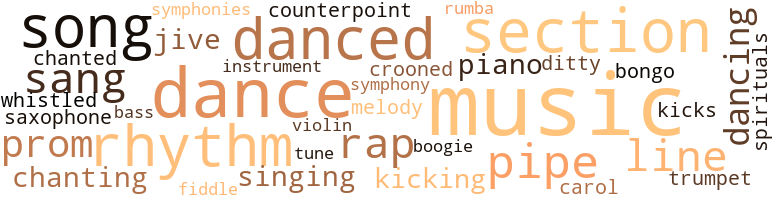
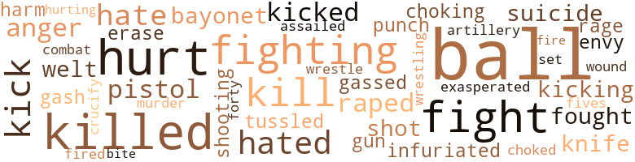
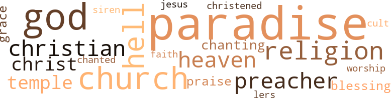

Cornerboy, by Simmons, Herbert Alfred (1957)
131 music-related terms matched in this text.
Most frequent terms in this topic: music (22); dance (13); section (10); rhythm (9); danced (9)
bass.n.07
Definition: the member with the lowest range of a family of musical instruments
| word | sentence |
|---|---|
| bass | The closed door shut out the sound of intoxicated voices and the whine of an alto sax , backed by a piano , drum , and bass fiddle . |
bongo.n.01
Definition: a small drum; played with the hands
| word | sentence |
|---|---|
| bongo | He started clapping his hands to the bongo beat . |
boogie.n.01
Definition: an instrumental version of the blues (especially for piano)
| word | sentence |
|---|---|
| boogie | Gangs of teen-agers crowded the sidewalk singing boogie - joogie music at the top of their voices . |
carol.n.01
Definition: joyful religious song celebrating the birth of Christ
| word | sentence |
|---|---|
| carol | The carol - lers left their footprints in the ankle-deep snow covering the stiff grass lawns . |
cornet.n.01
Definition: a brass musical instrument with a brilliant tone; has a narrow tube and a flared bell and is played by means of valves
| word | sentence |
|---|---|
| trumpet | " Man , dig Diz , ai n't never heard a cat that could ride like he does on trumpet . " |
counterpoint.n.01
Definition: a musical form involving the simultaneous sound of two or more melodies
| word | sentence |
|---|---|
| counterpoint | They jammed for twenty minutes , hot wild notes of screaming dissonance , slow , sweet , tricky counterpoint fol - lowing a basic pattern of rhythm and melody . |
croon.v.01
Definition: sing softly
| word | sentence |
|---|---|
| crooned | the rich , baritone voice of Arthur Prysock crooned . |
dance.n.01
Definition: an artistic form of nonverbal communication
| word | sentence |
|---|---|
| dance | He went up on the dance stand and re - quested a favorite number . |
| dance | " Scar double-crossed me , " Jake told Armenta as they sat over in the corner watching Scar and Kenny dance . |
| dance | He saw Pearl dance by him and told her he would be over after the number was over . |
| dance | On the next dance he left Kenny with Armenta and Jake and danced with Pearl . |
| dance | Armenta sat over in the corner sipping punch , watching Jake and Kenny dance . |
| dance | Rudolph would have tried to dance every dance with her . |
| dance | After the dance Armenta told Jake about Burnell and Beatrice . |
| dance | Scar hoped he could make it through the dance without getting sick , before his habit came down . |
| dance | Last week when we came back from the dance you were loaded . |
dance.v.02
Definition: move in a pattern; usually to musical accompaniment; do or perform a dance
| word | sentence |
|---|---|
| dancing | " If I had an ole lady as fine as you , I sure would n't be dancing with no one else , " Burnell said . |
| dancing | " An ' a Dynaflow - " Jake was dancing with some other girl again . |
dance.v.03
Definition: skip, leap, or move up and down or sideways
| word | sentence |
|---|---|
| dance | They dance , a whirling parody of jitterbugging , apple - jack , the bop - " Baby , you know how to hucklebuck ? " |
| dance | . . . " But , they call me daddy rolling stone - oh , my - when it 's pouring down ra-ii-nnn-nn - " Maxine loved to dance , but Jake was not in the dancing mood yet . |
| danced | They danced to the music of Percy White , a local band . |
| danced | On the next dance he left Kenny with Armenta and Jake and danced with Pearl . |
| dance | Rudolph would have tried to dance every dance with her . |
| dance | Burnell came over and asked Armenta to dance . |
| danced | He held her very close when he danced with her . |
| danced | Slits ' darting eyes danced over the rest of the guys in the car . |
| danced | Spotlights danced all over everything . |
| danced | Maxine danced down the steps and among the tables , the spotlight following her movements . |
| danced | She wiped the corner of her eyes and danced hurriedly away . |
| danced | Maxine danced before the crowd , moisture in her eyes spar - kling in the spotlights . |
| dancing | People were dancing up on the stage with no daylight between . |
| danced | Now and then they danced , especially when Sarah Vaughan or Billy Eckstine sang , but mostly they just sat and listened . |
ditty.n.01
Definition: a short simple song (or the words of a poem intended to be sung)
| word | sentence |
|---|---|
| ditty | It was tolling church bells and the Santa Claus ditty and the barking chest cold with the feverish brow . |
jive.v.01
Definition: dance to jive music; dance the jive
| word | sentence |
|---|---|
| jive | " That babe do n't jive , " he told Scar at Booker 's . |
kick.v.04
Definition: kick a leg up
| word | sentence |
|---|---|
| kicks | Man , I done tole you , you great now , you in the clouds , you getting your kicks way up high , do n't nobody live up here but you . |
| kicking | He did n't know what the bass and drummer were doing , but they were kicking like wild . |
| kicking | This guy I 'm thinking of do n't like none of his boys being drug downtown , and he might take care of things like that by kicking you off the force so you do n't go around embarrassing him , you dig ? " |
music.n.01
Definition: an artistic form of auditory communication incorporating instrumental or vocal tones in a structured and continuous manner
| word | sentence |
|---|---|
| music | The guys stood around the jukebox applejacking , and hucklebucking to the music . . . oh he 's got a fine brown frame . |
| music | Blocks of night clubs and taverns neon-lighted a message of pleasure and spoke their charms with blaring music and the shuffle of stimulated voices . |
| music | The crowd is with the band , sways with the music , makes the air static with gyrating fingers and pounding hands . |
| music | They danced to the music of Percy White , a local band . |
| music | People looked at each other , swept along by the rhythm of the music but not understanding the meaning . |
| music | The squares went along with the guys in the know caught in the fervor of the music . |
| music | Applause mingled with the music . |
| music | " So I can hear music when I sleep . " |
| music | Erroll Garner was giving out with " Pastel " and in the midst of the enraptured spell of the music , Jake decided he was hungry . |
| music | Louis Jordan 's " Run Joe " calypsoed from the radio and he drummed his hands to the music . |
| music | A pianist , bass fiddler , and violinist played warm , sentimental music on a raised platform . |
| music | It sounded like concert music . |
| music | His stomach seemed filled with music . |
| music | They sat in the room listening to the music until it closed . |
| music | " Yell , on music . " |
| music | He could see the music . |
| music | Then he saw Maxine come out in a white dress covered with sequins , open in front , showing her large , well-molded dancer 's legs , going like crazy to the music in black lace stockings . |
| music | The music stopped ; everyone clapped like crazy . |
| music | The music started again , this time a slow mambo beat . |
| music | He heard the music and saw the violinist stroll among the handholding couples . |
| music | Radios blare boogie-joogie music through opened windows . |
| music | Gangs of teen-agers crowded the sidewalk singing boogie - joogie music at the top of their voices . |
musical_instrument.n.01
Definition: any of various devices or contrivances that can be used to produce musical tones or sounds
| word | sentence |
|---|---|
| instrument | The violinist tipped his instrument to them and strolled over to another customer . |
piano.n.01
Definition: a keyboard instrument that is played by depressing keys that cause hammers to strike tuned strings and produce sounds
| word | sentence |
|---|---|
| piano | The guy on piano was building ivory stairways to the ceiling . |
| piano | The closed door shut out the sound of intoxicated voices and the whine of an alto sax , backed by a piano , drum , and bass fiddle . |
pipe.n.04
Definition: a tubular wind instrument
| word | sentence |
|---|---|
| pipe | Small round dots of fire bit the atmosphere ; the harsh burning ring of the cigarette , the feeble glow of the cigar , the ash-splattered flame of the pipe , gave off a poignant scent of tobacco . |
| pipes | I could n't locate but two lead pipes . |
| pipe | " There 's going to be a knuck or pipe in each group . |
| pipes | If the six is the task force , they got two lead pipes , and three blades , not counting the leader 's bay - onet and artillery . |
| pipe | Out on Merchant Place Henry Arnez laid his pipe aside and carefully folded the back sheet of the daily paper . |
| pipes | So every night Gussy 's father beat hell out of his ole lady , so Gertrude 's sis - ter was a hustler on the corners , so the Simpsons were threat - ened with eviction , so Joe did n't go to school half of the time because he was ashamed of his clothes and Moses ' brother was rotting in jail , so Wino Jepe made Louie 's twelve-year-old sister and the landlord would n't fix the busted toilet pipes in the tenement down the street . . . lawd , one of these days goin ' to move , way out . |
promenade.n.01
Definition: a formal ball held for a school class toward the end of the academic year
| word | sentence |
|---|---|
| prom | On the night of the high school prom Kenny and Armenta wore off-the-shoulder evening gowns - Kenny 's a smart imi - tation of the high-priced model , Armenta 's the real thing . |
| prom | Kenny was the talk of the prom . |
| prom | " Who ever heard of anybody wearing a white orchid to a high school prom ? " |
| prom | . . . Hey little girl , I 'm in love with you . . . And so went the night , the bittersweet prom , the last gathering of the class . |
rap.n.05
Definition: genre of African-American music of the 1980s and 1990s in which rhyming lyrics are chanted to a musical accompaniment; several forms of rap have emerged
| word | sentence |
|---|---|
| rap | Suppose somebody yaps to the cops and you get taken down on a murder rap maybe . |
| rap | Man , he sure hoped he could beat that narcotics rap . |
| rap | " You ca n't beat this rap by clamming up , did your friend tell you that ? |
| rap | We 're bringing a charge of rape against you along with that narcotics possession rap ; that is , unless you play along with me . " |
| rap | " What 's the matter with you , do n't you want to beat this rap ? " |
rhythm.n.04
Definition: the arrangement of spoken words alternating stressed and unstressed elements
| word | sentence |
|---|---|
| rhythm | Curt continued walking , carrying her books high in her arms , swaying with a rhythm that was a part of her natural walk . |
| rhythm | The drums and bass accentuate the rhythm . |
| rhythm | A few people joined in , the rhythm became jumbled as the crowd tried to catch the beat . |
| rhythm | The whole place started rock - ing , the rhythm carrying up to the band members who joined in clapping their hands with the crowd . |
| rhythm | They had a rocking good time to the tricky rhythm of the handclaps . |
| rhythm | They jammed for twenty minutes , hot wild notes of screaming dissonance , slow , sweet , tricky counterpoint fol - lowing a basic pattern of rhythm and melody . |
| rhythm | The bald head of the principal caught the beams from the light and cast a glittering reflection into the audience as his head hobbled up and down in rhythm to the trite speech he made every Jan - uary and every June . |
| rhythm | People looked at each other , swept along by the rhythm of the music but not understanding the meaning . |
| rhythm | Two wiry , unshaven working mates went through the same tiring process with the energy-saving , me - thodical rhythm of men who had worked hard all their lives . |
rumba.n.01
Definition: syncopated music in duple time for dancing the rumba
| word | sentence |
|---|---|
| rumba | We ai n't fixing to rumba with the T 's , not yet we ai n't . " |
sax.n.02
Definition: a single-reed woodwind with a conical bore
| word | sentence |
|---|---|
| saxophone | The gold rings on his fingers glittered as he raised the shimmering golden saxophone up to his mouth . |
section.n.01
Definition: a self-contained part of a larger composition (written or musical)
| word | sentence |
|---|---|
| section | He had been surprised to find such a nice-looking furnished apartment in that section of town . |
| section | I got a good man in each section , you follow me ? |
| section | I think I got a good man in each section , " Monk said , looking at Jake . |
| section | I looked around a long time before I found somebody in this section I figured could push without goofing . |
| section | Then the guy I bring in from J would have to learn your section . |
| section | A blind man , new to this section of town , attracted by the noise , decided this was the ideal corner to peddle his pencils . |
| section | " Man , you 're in the wrong section to find any Counts . " |
| section | In the alley behind Percy Drive , one of the series of streets making up Callek Place , a once wealthy residential section that had long since turned slums , a slim figure darted through the darkness and rapped on a closed wooden door three times in rapid succession , then paused and rapped lightly two times more . |
| section | After having the baggage put away they went around to the main section of the sprawling motel into the restaurant . |
| section | From four to four-thirty was the Boogy Joogy section , strictly for the squares . |
sing.v.02
Definition: produce tones with the voice
| word | sentence |
|---|---|
| sang | The fat man , whose nose sang when he breathed , reached into his cream - colored pants and tossed Jake a half dollar . |
| sang | The choir sang spirituals , the surprisingly ma - ture deep bass voices forming a colorful background for the high flying voices of the spirited sopranos . |
| sang | Scar , standing on the southwest corner of Bishop Street , directly across the street from the school , sang a few bars of Stan Kenton 's " Dynaflow " in a loud , off-key voice . |
| sang | " Jealousy , " Jerry sang and got one of the few laughs of his career . |
| sang | Now and then they danced , especially when Sarah Vaughan or Billy Eckstine sang , but mostly they just sat and listened . |
singing.n.01
Definition: the act of singing vocal music
| word | sentence |
|---|---|
| singing | The paperboy wiping the dripple from his nose with the back of his hand , the wheels of his bicycle singing on the pavement wet with dew . |
| singing | Gangs of teen-agers crowded the sidewalk singing boogie - joogie music at the top of their voices . |
song.n.01
Definition: a short musical composition with words
| word | sentence |
|---|---|
| song | " Just thinking of a song , remember the movie Casablanca ? " |
| songs | Out north , where Armenta lived , carollers made the neigh - borhood melodious with Christmas songs . |
| songs | Oc - casionally the violinist strolled among the customers play - ing songs requested from the tables . |
| songs | Armenta felt self-conscious because everyone had requested songs from operas or symphonies . |
| song | " It 's our favorite song . " |
| song | A good song , he thought . |
| song | A damn good song . |
| song | The Duke wrote a song about you , lady . |
| song | How does the song end ? |
spiritual.n.01
Definition: a kind of religious song originated by Blacks in the southern United States
| word | sentence |
|---|---|
| spirituals | The choir sang spirituals , the surprisingly ma - ture deep bass voices forming a colorful background for the high flying voices of the spirited sopranos . |
swing.n.05
Definition: a style of jazz played by big bands popular in the 1930s; flowing rhythms but less complex than later styles of jazz
| word | sentence |
|---|---|
| jive | " What started you on the jive ? " |
symphony.n.01
Definition: a long and complex sonata for symphony orchestra
| word | sentence |
|---|---|
| symphonies | Armenta felt self-conscious because everyone had requested songs from operas or symphonies . |
| symphony | And let your backbone slip - night rains , the baby cries , the car horns sail , the dogs and people make a staccato street symphony . |
tone.v.01
Definition: utter monotonously and repetitively and rhythmically
| word | sentence |
|---|---|
| chanted | " Trashwagon , Trashwagon , here comes ole Trashwagon , " they chanted . |
| Chanting | Chanting high school kids form human chains and crowd the sidewalk , their voices fill the city . |
| chanting | Children congregated on the side - walks at night , their singsong voices chanting " Little Sally Walker . " |
tune.n.01
Definition: a succession of notes forming a distinctive sequence
| word | sentence |
|---|---|
| line | Some jumped into the long line of waiting cabs , others walked to the corner and waited for a bus . |
| melody | They jammed for twenty minutes , hot wild notes of screaming dissonance , slow , sweet , tricky counterpoint fol - lowing a basic pattern of rhythm and melody . |
| tune | The violinist strung up the tune on the violin , playing with fire and magnitude . |
| line | " Naw , that was n't why , I was n't thinking about no line , well , not that line anyway . " |
| line | Another line , Georgia , stronger than ten thousand of those other lines , stronger than ten million , stronger than ten hundred thou - sand zillion - " Jake . " |
| lines | Another line , Georgia , stronger than ten thousand of those other lines , stronger than ten million , stronger than ten hundred thou - sand zillion - " Jake . " |
| line | " He said something about a line , it did n't make sense . |
violin.n.01
Definition: bowed stringed instrument that is the highest member of the violin family; this instrument has four strings and a hollow body and an unfretted fingerboard and is played with a bow
| word | sentence |
|---|---|
| violin | The violinist strung up the tune on the violin , playing with fire and magnitude . |
| fiddle | The closed door shut out the sound of intoxicated voices and the whine of an alto sax , backed by a piano , drum , and bass fiddle . |
whistle.v.01
Definition: make whistling sounds
| word | sentence |
|---|---|
| whistled | Jake whistled for a cab cutting across Welch on Thir - teenth Street . |
194 violence-related terms matched in this text.
Most frequent terms in this topic: ball (26); hurt (15); killed (15); fight (11); balls (11)
anger.n.01
Definition: a strong emotion; a feeling that is oriented toward some real or supposed grievance
| word | sentence |
|---|---|
| anger | The little man flushed with anger , but saw the welt on Scar 's face and said nothing . |
| anger | The look infuriated him and he kissed her more in anger than anything else . |
| anger | The tale spread through the neighborhood and business boomed , a far cry from situations in other stores where racial sentiments , unconsciously or in a fit of anger expressed , led to boycotts or freezeouts that had caused more than one store over the years to fold . |
| anger | The officer had expected terror and failing to find it had become flustered and not given full vent to his anger . |
attack.v.01
Definition: launch an attack or assault on; begin hostilities or start warfare with
| word | sentence |
|---|---|
| assailed | The high voice of her roommate assailed her . |
bayonet.n.01
Definition: a knife that can be fixed to the end of a rifle and used as a weapon
| word | sentence |
|---|---|
| bayonets | Five bayonets , seven switchblades and two brass knucks . |
| bayonet | Me , Scar , and Scotty will have a bayonet apiece too . " |
| bayonets | Let 's see , we got two bayonets left , and seven switchblades , that 's nine . |
crucify.v.01
Definition: kill by nailing onto a cross
| word | sentence |
|---|---|
| crucify | All the evidence pro and con will reveal one thing that 's going to crucify you in that courtroom - you and Georgia were intimate with each other . |
cut.n.05
Definition: a wound made by cutting
| word | sentence |
|---|---|
| gash | I bet you got corner boys , gash hounds , and everything else , in fact , I know you have . |
| gash | Anyway , everybody knew his repu - tation as a gash hound . |
envy.n.01
Definition: a feeling of grudging admiration and desire to have something that is possessed by another
| word | sentence |
|---|---|
| envy | His wardrobe was the envy of all the cats on the corners , and caught the eye of all the babes and he knew it . |
| envy | Building her up in the fellows ' eyes and then watching them look at you in envy when you walked down the street with her . |
erase.v.01
Definition: remove from memory or existence
| word | sentence |
|---|---|
| erase | Man , what he needed was a big eraser to erase that last month and start all over again . |
| erase | Can it erase time ? |
fight.n.02
Definition: the act of fighting; any contest or struggle
| word | sentence |
|---|---|
| combat | " O.K. " " In full combat equipment , " Jake said , his voice hardly audible . |
| fighting | She remem - bered the years of fighting . |
fight.n.05
Definition: a boxing or wrestling match
| word | sentence |
|---|---|
| fight | This was where he had got cut in a wild running gang fight between the T 's and the Ratz . |
| fight | " I have my first fight next week . " |
| fight | " He said he won his fight two weeks ago . |
fight.v.02
Definition: fight against or resist strongly
| word | sentence |
|---|---|
| fight | Soon they would roam around looking for trouble and if unable to find it would fight among themselves . |
| fight | " Why do we always fight ? " |
| fight | " I do n't fight no wars no more , " Perk said , " if that 's what you mean . " |
| Fight | " Fight if you want to . |
| fight | Spider 's eyes popped wide , more in amazement than pain , although the blow sent him reeling into the brick wall of the pawnshop and he had to fight to keep from blacking out . |
| fighting | He was fighting for his life . |
| fighting | She remembered times when the Termites were fighting some gang across town and how often she told Spider how silly it was , and how she had told Jake the same thing . |
| fought | When - ever the thought came up intellect and emotions fought each other and so he always ended up dropping the problem . |
| fight | You have to have a reason to fight , do n't you ? " |
| fight | " Gangs always fight each other . |
| fighting | " Naw , not especially till you start fighting 'em . " |
| fighting | Both people are fighting against each other , you know what I mean ? " |
| fought | The big car fought its way back . |
| fighting | But pretty soon the challenge is going to disappear because you 're not going to know what you 're fighting any more . |
| fighting | " Jake , I do n't want you fighting over me . " |
| fighting | " I was n't fighting over you , I was fighting for you . " |
| fighting | " I was n't fighting over you , I was fighting for you . " |
| fighting | " I was n't fighting 'cause I was trying to keep somebody from getting next to you , I just did n't want him bothering you if you did n't want to be bothered . " |
| fight | She tried to make him promise not to fight any more . |
| fight | He said he would n't fight , especially in front of her , unless it could n't be helped . |
| fought | He fought the flicker of pride drowning his desire to bawl Jake out as he originally intended doing whenever he caught up with him . |
forty-five.n.01
Definition: a .45-caliber pistol
| word | sentence |
|---|---|
| forty-fives | " Two forty-fives and a thirty-eight . |
fury.n.01
Definition: a feeling of intense anger
| word | sentence |
|---|---|
| rage | He had to go to work and take care of his invalid mother , because his father , who crip - pled his mother one night in a drunken rage , got killed two days after Scar graduated from high school last year when he crashed into a lamppost in another man 's car while he was drunk . |
| rage | The kids fled , terrified by the mountain of angry man with rage chew - ing up his features . |
gag.v.06
Definition: cause to retch or choke
| word | sentence |
|---|---|
| choking | He drove away cursing the choking sensation in his throat . |
| choking | " You 're the one who 'll be choking , " Scar said . |
| choked | She choked . |
gas.v.01
Definition: attack with gas; subject to gas fumes
| word | sentence |
|---|---|
| gassed | The kitchen had gassed him too . |
| gassed | He stayed gassed on pod and alcohol . |
gun.n.01
Definition: a weapon that discharges a missile at high velocity (especially from a metal tube or barrel)
| word | sentence |
|---|---|
| gun | " Get out , " the officer said , drawing his gun . |
| gun | Voices exploding deep in the throats of the courtroom with the speed of a sputtering machine gun . |
hate.v.01
Definition: dislike intensely; feel antipathy or aversion towards
| word | sentence |
|---|---|
| hated | In those moments he actually hated Armenta , because he thought she was ridiculing him and silently laughing at his uneasiness . |
| hate | That was when it was that Armenta began to hate her father . |
| hate | " I hate you . " |
| hated | She hated Elm Street . |
| hated | She hated Jake Adams and she hated every woman who had ever gotten married . |
| hated | She hated Jake Adams and she hated every woman who had ever gotten married . |
| hated | She hated her father for making her find faults in Jake . |
| hate | I guess I 'm lucky he 's got that , but I hate to think of him around all that gambling . |
| hated | His own father had butted in his and he had hated him , and yet he and Jake had never been close , at least not in a long , long time . |
| hates | I mean everybody loves and hates and has babies and pulls creeps - " " Creeps ? " |
| hate | I 'd hate to have to wrestle that baby . " |
hurt.v.04
Definition: cause damage or affect negatively
| word | sentence |
|---|---|
| hurt | " You seem to like to be hurt . " |
| hurt | " This boy 's lying here hurt bad , maybe dying even , " Mac said frantically , " and you 're getting ready to trample him because of something that goddamn Clint called you . |
| hurt | Oh , Jake , do n't be hurt too badly ; but her mother said he was not on the critical list . |
| hurt | He had n't told him anything , just looked at him , not saying anything , but there was hurt in his eyes , hurt for what he had done . |
| hurt | She believed she had been hurt too badly for tears , that had to be the reason she could n't cry , did n't it ? |
infuriate.v.01
Definition: make furious
| word | sentence |
|---|---|
| infuriated | The look infuriated him and he kissed her more in anger than anything else . |
| exasperated | " Oh , Bert , " Evelyn said exasperated as he guided her into a Walgreen Drugstore . |
| infuriated | The calm expression , on Jake 's face , portraying his indifference , infuriated the pacing D.A. , fascinated the jury , and held the courtroom in the grip of shuffling emotions . |
injury.n.01
Definition: any physical damage to the body caused by violence or accident or fracture etc.
| word | sentence |
|---|---|
| hurt | " If Bert had n't been your friend , he would n't have gotten hurt , " Evelyn said . |
| harm | " He did n't mean no harm , " the guy with the conk said . |
| harm | " He did n't mean no harm , " the guy said pushing Shades ahead of him . |
kick.v.04
Definition: kick a leg up
| word | sentence |
|---|---|
| kicks | Man , I done tole you , you great now , you in the clouds , you getting your kicks way up high , do n't nobody live up here but you . |
| kicking | He did n't know what the bass and drummer were doing , but they were kicking like wild . |
| kicking | This guy I 'm thinking of do n't like none of his boys being drug downtown , and he might take care of things like that by kicking you off the force so you do n't go around embarrassing him , you dig ? " |
kick_back.v.02
Definition: spring back, as from a forceful thrust
| word | sentence |
|---|---|
| kicks | " He 's getting his kicks teasing you , " Scar said laughing . |
| kicks | He got his own kicks on the hard , red glare . |
| kicked | Clint kicked sharply against the fence knocking the bulldog from the cuff . |
| kicked | Spider kicked Specs in the groin and brought a knee under Specs ' chin when he folded over . |
| kicked | Sweat broke out on his face , he punched , kicked , gouged , bit , and yelled at the swirling mob raining blows upon him . |
| kick | " You think you got ta kick in some teeth . " |
| kick | Ice was on the sidewalk so he took it easy , not that he could go very fast anyway , but he sure did n't want to kick up any heels on that ice . |
| kicked | She had a white hat full of black feathers bouncing on her head and she came out to the front of the stage and kicked her legs at the audience . |
| kicks | The Cad was the best babe he knew , she gave you kicks , she performed to your commands and if you took care of her she took care of you , which was saying a hell of a lot . |
| kicking | She bet everybody was kicking up dirt about it . |
| kick | Scar had said he would kick the monkey . |
kill.v.10
Definition: cause the death of, without intention
| word | sentence |
|---|---|
| kill | He wondered what Scar was going to do when he got up to fifteen and twenty a day which would happen eventually , if he did n't kill himself first trying to break off the habit . |
| killed | He had to go to work and take care of his invalid mother , because his father , who crip - pled his mother one night in a drunken rage , got killed two days after Scar graduated from high school last year when he crashed into a lamppost in another man 's car while he was drunk . |
| kill | I wonder what could be-ee-ee-ee his name . . . Man , do n't Nellie kill you ? " |
| kill | '' Mama will kill me , " Kenny suddenly realized . |
| killed | Two of my brothers got killed in World War Two . " |
| killed | " Spider killed me talking that stuff . |
| Kill | Kill that mother fug - Sce-de-da . |
| killed | I should have killed him when I had the chance , " Frenchie said . |
| kill | You trying to kill him ? |
| killed | I might have killed him even , " Mac said softly , with his head down - cast . |
| kills | " Get off it before it kills you , " he said gruffly . |
| killed | " I dug it a month ago , right around when Red got killed , " Spider said . |
| killed | I think we mighta killed him , " a small , skinny guy said to Slits in the car . |
| killed | " Damn , I think we killed him ! " |
| kill | A little piece of white ass ai n't going to kill you . " |
| kill | " That 's just it , they do n't kill me . " |
| killed | It does n't say lie 's on the critical list , but he killed the girl that was riding with him . " |
| killed | " The girl that was with him , she got killed in the wreck . |
| killed | That 's what killed you , Georgia . |
| killed | " Mr. Garth , will you first confine your comments to what occurred on the night of - " " Dat nigger killed ah white woman , dat 's what happened ! " |
| killed | Out in the sun - light , in the Dynaflow across the street from the school , shoot - ing the bull with the fellows , looking at the babes with big stockings - " The reason dat white gal got herself killed was 'cause that nig - " The rumble in the courtroom , the groan from the tired overworked judge . |
| killed | " He killed dat gal ! " |
| killed | They wrestled on weed - filled lots , played sandlot football , and killed each other in cowboy and Indian ambuscades . |
killing.n.02
Definition: the act of terminating a life
| word | sentence |
|---|---|
| kill | " Aunt Jeremiah 's country cousin fattened for the kill . " |
knife.n.02
Definition: a weapon with a handle and blade with a sharp point
| word | sentence |
|---|---|
| knife | Cooker picked his fingernails with an old battered pocket - knife . |
| knife | Slits , seated at the right side of the table , glanced away from the knife planted in the center of the table sur - rounded by blocks of wood representing battle stations and looked at the guy who had entered . |
| knife | " Lay off the funny stuff , " Slits said , his eyes back on the knife . |
murder.n.01
Definition: unlawful premeditated killing of a human being by a human being
| word | sentence |
|---|---|
| murder | Suppose somebody yaps to the cops and you get taken down on a murder rap maybe . |
musket_ball.n.01
Definition: a solid projectile that is shot by a musket
| word | sentence |
|---|---|
| ball | So there it was ; he had n't met a girl yet that did n't want to put the ball and chain on him , stick a sign on his back saying Hands off , I own him , do n't touch . |
| balls | You had to run the balls from the one up to the sixteen or backwards in order to get to the balls that had the same number as the pills . |
| balls | You had to run the balls from the one up to the sixteen or backwards in order to get to the balls that had the same number as the pills . |
| ball | Scar , who knew he started on junk because he wanted to play football in college more than anything in his life , maybe even pro ball , but he had to turn down six scholarships , any one of which he would have been glad to take . |
| ball | I do n't see how he even man - aged to get the ball away , the way they were riding him down , much less throw that thing so far . |
| ball | That ball must have gone fifty yards , and did you see how Hill came out of nowhere to take it ? |
| ball | How he ever got his hands on that ball I 'll never know . " |
| balls | Scar bent over the table in the slightly pigeon-toed stance good pool shooters assume to apply power to the stroke when breaking the balls . |
| balls | The guys in the know had double-teamed on Scar , telling each other the pills they held and setting each other up by ducking up or making each other balls , but Scar was still winning . |
| ball | When they were unsuccessful in hiding him behind some ball , so he could n't hit the ball he was supposed to shoot at , which happened too often to suit them , Scar ran the table . |
| ball | When they were unsuccessful in hiding him behind some ball , so he could n't hit the ball he was supposed to shoot at , which happened too often to suit them , Scar ran the table . |
| balls | 'Cause if he ever got excited , just a little bit , when the bims sorta happened to put on pressure , he was going to screw up , and in this business you ca n't afford to have no goof balls . |
| ball | If you do - if a guy ca n't carry the ball , he 's got to get off the team before he messes the team up , you know that ? " |
| balls | Perk won the first game , making his balls before the others had a chance to shoot . |
| ball | Looks changed from mockery to pure astonishment as Scar made the ball do everything but talk . |
| ball | Perk would constantly draw the cue ball behind other balls to keep Scar from a shot , only to see Scar play a combination of rails and hit the ball and even make a lot of those shots . |
| balls | Perk would constantly draw the cue ball behind other balls to keep Scar from a shot , only to see Scar play a combination of rails and hit the ball and even make a lot of those shots . |
| ball | Perk would constantly draw the cue ball behind other balls to keep Scar from a shot , only to see Scar play a combination of rails and hit the ball and even make a lot of those shots . |
| ball | They played nine ball for a dollar a game . |
| ball | Hey Leo , how ' bout a nice sociable game of nine ball ? " |
| balls | Booker was the portly , middle-aged owner of the pool hall , who had been racking pool balls for over twenty years and was still a kid at heart . |
| ball | Jake took his eye off the ball momentarily and glanced sidewise at Booker . |
| ball | Scotty made a cross-corner shot to sink the eight ball . |
| balls | Rack the damn balls , will ya ? " |
| ball | " Eleven ball in the side , " Jake said , trying to keep from sounding annoyed . |
| balls | The bowling balls blasted into the pins and agitated players yelled above the din cursing encouragements at each other . |
| ball | The ball hit the corner of the pocket and spun off . |
| Balls | Balls click in Booker 's and the little back room finds the dice roaming . |
| ball | You take one little ball , two big pad - dles , and a net . |
| ball | and two people chase that little ball all over the court in the hot sun to hit it with a paddle , what kind of sense does that make ? " |
| ball | You take a little hard ball , place it on a pin , rare back with a club and hit it just as far as you can . |
| ball | Then when you finally get the ball where you want it , what do you do ? |
| ball | " Eight ball three rails in the corner . " |
| ball | Scar said , watching the eight ball just miss the corner . |
| balls | Over on Welch Street the silent balls in Booker 's began to click again . |
| ball | Scar said after sinking the eight ball . |
| ball | You tried to hit a tennis ball with a broomstick and if the catcher caught the ball after you swung and missed , you were out . |
| ball | You tried to hit a tennis ball with a broomstick and if the catcher caught the ball after you swung and missed , you were out . |
open_fire.v.01
Definition: start firing a weapon
| word | sentence |
|---|---|
| fired | She was a white girl , " Mr. Arnez fired the accusation at his wife . |
| fire | That bastard do n't dare fire me , I draw too many , people and a lot of other places in town want me . " |
pain.v.02
Definition: cause emotional anguish or make miserable
| word | sentence |
|---|---|
| hurt | " I did n't mean to hurt you , " he said awkwardly . |
| hurt | " I did n't mean to hurt you , Slim , " Jake said . |
| hurt | Armenta was hurt . |
| hurt | It wo n't hurt nothing , will it ? " |
| hurt | " You hurt me . " |
| hurt | " Ai n't none of them words never hurt no - body as bad as that boy lying down there . |
| hurt | After awhile it did n't hurt any more . |
| hurt | It hurt Specs to talk . |
| hurt | She could not stand not knowing how badly Spider was hurt . |
| hurting | Spider had insisted his back was hurting him too much to go to work , but Evelyn knew what was wrong with him . |
pistol.n.01
Definition: a firearm that is held and fired with one hand
| word | sentence |
|---|---|
| pistol | Though Jake did not realize it , that was what had saved him from being pistol whipped . |
| pistol | The officer patted his pistol . |
| pistol | " Well , I can tell you , I started to take out my pistol and be _ " " Arhumph , Mr. Marachy , please , let 's just stick to what you did do . " |
| pistols | Their silver cap pistols glistened in the sun . |
punch.n.01
Definition: (boxing) a blow with the fist
| word | sentence |
|---|---|
| punch | Armenta sat over in the corner sipping punch , watching Jake and Kenny dance . |
| punch | Scar took a punch at Jake and fell on his face . |
rape.v.01
Definition: force (someone) to have sex against their will
| word | sentence |
|---|---|
| raped | All I 've got to tell that court is that you raped that white girl in the seat of your Cadillac and the case is mine . |
| raped | It does n't matter whether you raped her or not . |
| raped | " And you are positive Georgia Garveli was raped by my client ? " |
| raped | " I do n't believe that guy raped that girl . |
scuffle.v.02
Definition: fight or struggle in a confused way at close quarters
| word | sentence |
|---|---|
| tussled | You know I promised Mother to be home by twelve , " she managed to blurt out while they tussled and fondled each other . |
| tussled | They tussled with each other . |
shoot.v.02
Definition: kill by firing a missile
| word | sentence |
|---|---|
| shot | She shot the accusation at him almost bitterly . |
| shot | Trashwagon would have shot him . |
| shot | They shot marbles in back yards that had not seen grass for years . |
shooting.n.02
Definition: killing someone by gunfire
| word | sentence |
|---|---|
| shooting | If anybody does the shooting it 'll be me . |
| shooting | The guy shooting threw craps . |
sic.v.01
Definition: urge to attack someone
| word | sentence |
|---|---|
| set | " You 're still set on being a slut , " Jake said quietly . |
sting.n.03
Definition: a painful wound caused by the thrust of an insect's stinger into skin
| word | sentence |
|---|---|
| bite | " His bark 's worse than his bite , " Scar said . |
suicide.n.01
Definition: the act of killing yourself
| word | sentence |
|---|---|
| suicide | " Only fools commit suicide . |
| suicide | A few years ago it would have been suicide to come in here without the rest of the T 's . |
| suicide | What did you expect Monk to do , stick around and commit suicide ? " |
wale.n.01
Definition: a raised mark on the skin (as produced by the blow of a whip); characteristic of many allergic reactions
| word | sentence |
|---|---|
| welt | The little man flushed with anger , but saw the welt on Scar 's face and said nothing . |
| welt | Jake wondered , looking at the long welt on Scar 's face . |
| welt | It was Scar , Jake 's best friend , a tall lithe nineteen-year-old , who wore his unruly hair in a close-clipped , crew-cut fashion and got his name from the long razor-inflicted welt that crawled diagonally from his right temple through the cleft in his chin . |
weapon.n.02
Definition: a means of persuading or arguing
| word | sentence |
|---|---|
| artillery | If the six is the task force , they got two lead pipes , and three blades , not counting the leader 's bay - onet and artillery . |
wound.n.01
Definition: an injury to living tissue (especially an injury involving a cut or break in the skin)
| word | sentence |
|---|---|
| wound | " Man , she 's tough , " Jake said , not revealing her name and getting wound up for the coming bull session . |
wrestle.v.01
Definition: combat to overcome an opposing tendency or force
| word | sentence |
|---|---|
| wrestling | She moaned against him wrestling him with her mouth , her breasts rigid , heaving against his chest . |
| wrestle | I 'd hate to have to wrestle that baby . " |
68 religion-related terms matched in this text.
Most frequent terms in this topic: Paradise (15); God (9); church (6); hell (5); religion (3)
baptize.v.01
Definition: administer baptism to
| word | sentence |
|---|---|
| christened | Some walked all the way down to the corner and went into a dingy , cramped restaurant christened Molly 's , but called the Greasy Spoon by the customers . |
blessing.n.05
Definition: the act of praying for divine protection
| word | sentence |
|---|---|
| blessing | The commentator talked of the good Christian families in good Christian America , who said a good Christian blessing before a good Christian Thanksgiving dinner and pitied the millions of people , in other parts of the world , who had so much less to be thankful for from the bottom of their good Christian hearts . |
| blessing | You 're a blessing in dis - guise . " |
christian.n.01
Definition: a religious person who believes Jesus is the Christ and who is a member of a Christian denomination
| word | sentence |
|---|---|
| Christian | The commentator talked of the good Christian families in good Christian America , who said a good Christian blessing before a good Christian Thanksgiving dinner and pitied the millions of people , in other parts of the world , who had so much less to be thankful for from the bottom of their good Christian hearts . |
| Christian | The commentator talked of the good Christian families in good Christian America , who said a good Christian blessing before a good Christian Thanksgiving dinner and pitied the millions of people , in other parts of the world , who had so much less to be thankful for from the bottom of their good Christian hearts . |
| Christian | " Say , Jake , if this babe 's so tough , maybe you need to de - vote all your time to her , so good Christian as I am , I 'll do you a favor and take Maxine off your hands . " |
church.n.02
Definition: a place for public (especially Christian) worship
| word | sentence |
|---|---|
| church | " You do n't seem to be worrying about your daughter going to church early in the morning . " |
| church | It was tolling church bells and the Santa Claus ditty and the barking chest cold with the feverish brow . |
| church | And everybody gets bills and goes to church and do n't believe in it , and drinks whisky , or shoots themselves with a plunger , and everybody lives and dies , do n't they ? " |
| church | The church was a field of white faces , hushed , quiet , reverent . |
| church | One lonely dark face was present on the end of a church bench in the back . |
church.n.04
Definition: the body of people who attend or belong to a particular local church
| word | sentence |
|---|---|
| church | You know you have to be at church early in the morning . " |
cult.n.03
Definition: followers of an unorthodox, extremist, or false religion or sect who often live outside of conventional society under the direction of a charismatic leader
| word | sentence |
|---|---|
| cult | The name had become fastened to Papaseppe Garveli by the neighborhood , which was quickly convinced his first name was too long and diffi - cult to pronounce , and so he had been " Pop " from almost the first day he opened for business in the then salt-and-pepper neighborhood . |
eden.n.01
Definition: any place of complete bliss and delight and peace
| word | sentence |
|---|---|
| Paradise | Sniffers coming into the Paradise Saturday . |
| Paradise | That night Jake got rid of one hundred dollars of junk at the Paradise . |
| Paradise | After the movie they went across the street to the Paradise . |
| Paradise | Saturday night the Paradise . |
| Paradise | One week later , at the Paradise where he had gone on business matters , Jake ran into Maxine sitting at the bar . |
| heavens | Lightning explored the heavens in snaky , fiery streaks . |
| Paradise | Down on the corner from the poolroom Red leaned against the sleeping , deserted Paradise , his houndstooth coat hug - ging his emaciated frame , the collar burrowing under his neck , the blue suede unblocked hat pressing his cars . |
| Paradise | A city trash truck grunted down the alley behind Welch Street , the back of the truck ringing to the clink of bottles recently picked up from the rear of the Paradise . |
| Paradise | Two ragged jalopies pulled up in front of the Paradise and stopped . |
| Paradise | You 're going to make me a feature dancer at the Paradise , are n't you , Russell ? " |
| Paradise | Let 's go see what 's happening at the Paradise . " |
| Paradise | Jake 's eye caught the neon sign over the Paradise flashing the name of the attraction at the club . |
| Paradise | On the sidewalk , outside of the Paradise , Jake lit another cigarette . |
| Paradise | Jake stood in front of the Paradise , feet planted , hands shoved deep into the overcoat pockets of the gray velour overcoat with the belt-in-the-back . |
| Paradise | I hear you 're at the Paradise now . |
| heaven | He did n't believe that heaven and hell crap , or that God looked out for what happened on earth and the rest of that Mickey Mouse junk . |
| heaven | " The mir - acle man , the man who makes manna rain from heaven . " |
| Paradise | Red was a nice stud , too bad - Her name was still in neon over the Paradise . |
god.n.03
Definition: a man of such superior qualities that he seems like a deity to other people
| word | sentence |
|---|---|
| God | " Thank God for that , " Armenta said , looking at Kenny and winking . |
| God | " And God help ya if ya pull - ing ah fast one ! " |
| God | Why does God let things like that happen ? " |
| God | Damn , he could n't have been more impressed if Monk was God . |
| God | She wondered if there was really a God . |
| God | He did n't believe that heaven and hell crap , or that God looked out for what happened on earth and the rest of that Mickey Mouse junk . |
| God | I mean when you start trying to think about God , and the world and things like that - I mean my math teacher said you ca n't think of religion intellectually . |
| God | " You mean God ? |
| God | It was funny , she had spent all this time wondering about there being a God when the sim - ple truth was under her nose all along , because actually , I mean really it did not matter whether there was one or not . |
grace.n.05
Definition: (Greek mythology) one of three sisters who were the givers of beauty and charm; a favorite subject for sculptors
| word | sentence |
|---|---|
| Grace | But ever since Grace had moved in after Mabel dropped out of school to get married - and that had raised quite a few eyebrows - Grace would come in and talk all night long , she knew she would . |
| Grace | Grace saw the look in Armenta 's eyes and backed away . |
hell.n.01
Definition: any place of pain and turmoil
| word | sentence |
|---|---|
| hell | Fi - nally , Jake decided to hell with it . |
| hell | " Aw , shut the hell up , " Clint 's working mate Kelly said , advancing on Clint with his fists balled . |
| hell | Too late now , you 're a man now ... " Jake knew his old man had raised a lot of hell in his day . |
| hell | " Grace - " " Yeh , notice you ai n't never gave no dark-skinned boy a tumble , got to be real light to crawl up on you , well - " " Grace , shut the hell up before I throttle you ! " |
| hell | " I told that son-of-a - I told that guy to get the hell up from therel " An explosion of guttural comments sandwiched between veiled snickers . |
jesus.n.01
Definition: a teacher and prophet born in Bethlehem and active in Nazareth; his life and sermons form the basis for Christianity (circa 4 BC - AD 29)
| word | sentence |
|---|---|
| Jesus | She read it all , every word , line , syllable , comma , and period of it and it made her sick because Jake Adams was guilty , more guilty than Judas had been when he double - crossed Jesus back there in the old days . |
lir.n.01
Definition: the sea personified; father of Manannan; corresponds to Welsh Llyr
| word | sentence |
|---|---|
| lers | The carol - lers left their footprints in the ankle-deep snow covering the stiff grass lawns . |
messiah.n.01
Definition: any expected deliverer
| word | sentence |
|---|---|
| Christ | Jesus , he had to get out of here , if Monk ever found out - " For Christ sake , somebody call a ambulance , " Mac said . |
| Christ | " Phaspt , who ever heard of anyone going out on Christ - mas Eve ? " |
praise.n.02
Definition: offering words of homage as an act of worship
| word | sentence |
|---|---|
| praise | The front pages of the newspapers carried headlines . . . RECENTLY ELECTED POLICE COMMISSIONER CRACKS DOWN ON TEEN-AGE TERROR . . . TEEN - AGE GANG UPBRAIDED . . . POLICE BRING END TO TEEN-AGE CRIME WAVE . . . Everyone had praise for this newly elected , uncorrupt police force . |
| praise | The praise from the guys in the poolroom still buzzed in his ears . |
preacher.n.01
Definition: someone whose occupation is preaching the gospel
| word | sentence |
|---|---|
| preacher | The preacher 's words did not make any sense . |
| preacher | He could not hear the preacher , he could not even hear Kenny ... a million years ago - fugg it . |
| preachers | He had known plenty of kids to go bad who had been ruled with iron hands , preachers ' sons even . |
religion.n.01
Definition: a strong belief in a supernatural power or powers that control human destiny
| word | sentence |
|---|---|
| religion | " O.K. , how about religion . |
| religion | " Well , the Immaculate Conception is one of those silly things in religion which we were about to talk about . " |
| religion | I mean when you start trying to think about God , and the world and things like that - I mean my math teacher said you ca n't think of religion intellectually . |
| faith | You have to accept it on faith just like the basic premises in mathematics . " |
religion.n.02
Definition: an institution to express belief in a divine power
| word | sentence |
|---|---|
| Religion | Religion was a big joke . |
siren.n.01
Definition: a sea nymph (part woman and part bird) supposed to lure sailors to destruction on the rocks where the nymphs lived
| word | sentence |
|---|---|
| siren | A siren screamed . |
temple.n.03
Definition: an edifice devoted to special or exalted purposes
| word | sentence |
|---|---|
| temple | Mrs. Waston put a sweating , beefy palm on her throbbing temple . |
| temple | It was Scar , Jake 's best friend , a tall lithe nineteen-year-old , who wore his unruly hair in a close-clipped , crew-cut fashion and got his name from the long razor-inflicted welt that crawled diagonally from his right temple through the cleft in his chin . |
tone.v.01
Definition: utter monotonously and repetitively and rhythmically
| word | sentence |
|---|---|
| chanted | " Trashwagon , Trashwagon , here comes ole Trashwagon , " they chanted . |
| Chanting | Chanting high school kids form human chains and crowd the sidewalk , their voices fill the city . |
| chanting | Children congregated on the side - walks at night , their singsong voices chanting " Little Sally Walker . " |
worship.n.01
Definition: the activity of worshipping
| word | sentence |
|---|---|
| worship | Man , he used to worship Monk , but now , well now he just did n't know . |